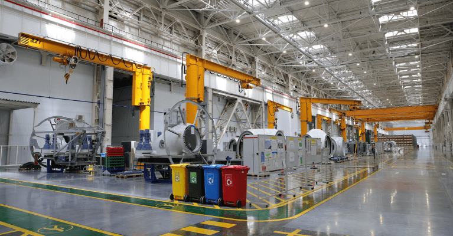
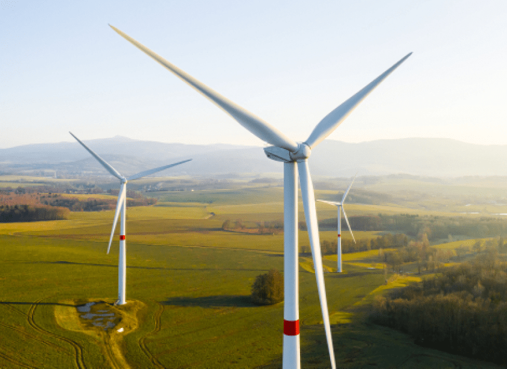
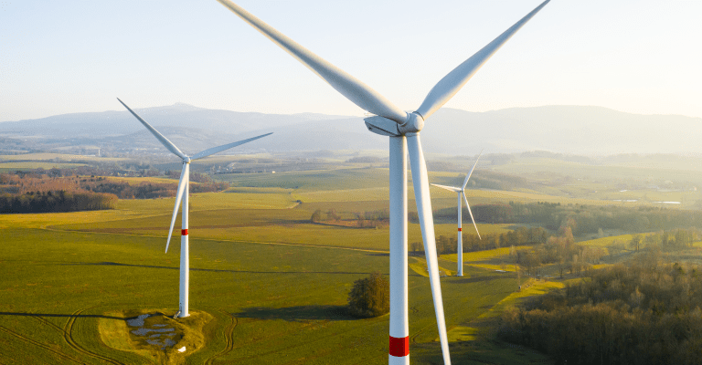
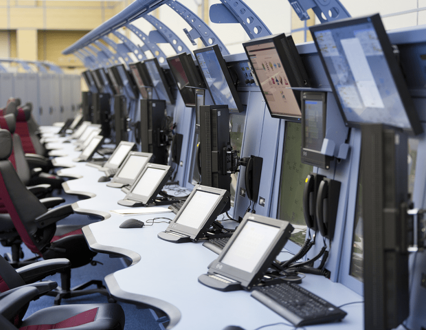

Командно-диспетчерский пункт аэропорта
“Внуково”
Командно-диспетчерский пункт аэропорта
“Внуково”
Задача объекта:
Оснащение КПП аэродромного
командного диспетчерского
пункта «Внуково»
сертифицированными
техническими средствами
защиты, видеонаблюдения
и досмотра
Сложность объекта:
Категорированный объект с
повышенными требованиями к
безопасности.
Объем работ:
Создание и оснащение
системами безопасности
двух транспортных шлюзов,
установка противотаранной
дорожно-заградительная
установки за «0» с
дорогой, модернизация
системы безопасности КПП с
тотальной системой
контроля и защиты.
Срок реализации проекта: 2
месяца.
Автотранспортный контрольно-пропускной пункт
АО “НОВАВИНД” г.Волгодонск
Автотранспортный контрольно-пропускной пункт
АО “НОВАВИНД” г.Волгодонск
Задача объекта:
Создание автотранспортного
контрольно-пропускного
пункта для нужд АО
«НоваВинд» на периметре
Филиал АО «АЭМ-технологии»
«Атоммаш» в г.Волгодонск
Сложность объекта:
Категорированный объект с
повышенными требованиями к
безопасности.
Объем работ:
Разработка рабочей
документации, сборка
двухэтажного модульного
автономного
контрольно-пропускного
пункта, оснащённого
четырьмя полноростовыми
турникетами и системой
тепловизионного
мониторинга
и распознавания лиц.
Срок реализации проекта:
1 этап - 4 месяца, 2 этап
– 2 месяца.

«Кочубеевская ВЭС»
«Кочубеевская ВЭС»
Задача объекта:
Оснащение комплексной
системой безопасности
«Кочубеевскую ВЭС». Защита
здания ОПУ ВЭС и 84
комплектов КТП + ВЭУ.
Сложность объекта:
Большая протяженность
охраняемой территории:
расстояние между самыми
дальними объектами
крупнейшей ветро-электро
станции России около 50
км.
Объем работ:
Разработка и изготовление
специальных узлов
крепления для
электромагнитных замков,
кабельных трасс, установка
системы охранно-пожарной
сигнализации (более 4 000
извещателей), монтаж
системы контроля и
управления доступом (более
200 точек прохода),
система видеонаблюдения
(более 250 камер).
Срок реализации проекта: 2
месяца.
4 месяца.


Филиал
«Московский центр автоматизированного
управления воздушным движением» ФГУП
«Госкорпорация по ОрВД»
Филиал
«Московский центр автоматизированного
управления воздушным движением» ФГУП
«Госкорпорация по ОрВД»
Задача объекта:
Обеспечение бесперебойного
функционирования
технических средств
безопасности объектов
транспортной
инфраструктуры.
Сложность объекта:
Территориально
распределённые объекты
(более 40) в радиусе
600 км от Москвы
Объем работ:
Удаленный мониторинг
работоспособности
технических средств,
проведение регламентных
работ, устранение
аварийных ситуаций,
предоставление заказчику
функционала системы
HelpDesk.
Срок реализации проекта: 2
месяца.
5 лет.

Аэродром Ярославль (Туношна)
Аэродром Ярославль (Туношна)
Задача объекта:
Создать комплексную
систему безопасности
объектов транспортной
инфраструктуры
Ярославского отделения
Тверского центра ОВД
филиала «МЦ АУВД» ФГУП
«Госкорпорация по ОрВД»
«КДП (ДПП/ДПК/СДП/ДПР,
совмещенный с ПРПА)»
аэродрома Ярославль
(Туношна)
Сложность объекта:
Объект авиационной
инфраструктуры относится к
особо опасным, технически
сложным и уникальным.
Объем работ:
Разработка рабочей
документации, монтаж и
пусконаладочные работы
системы охранной
сигнализации, системы
контроля и управления
доступом, системы
видеонаблюдения и
видеоконтроля
Срок реализации проекта:
2 месяца.
Действующий контрольно-пропускной
пункт
Действующий контрольно-пропускной
пункт
Задача объекта:
Защита территориально
распределенных объектов
ОПРС и РЛП
Сложность объекта:
Радиолокационные позиции и
отдельные приводные
радиостанции
территориально
распределенные в зоне
протяженностью более 2
км..
Срок выполнения монтажных
и пусконаладочных работ:
Установление и настройка
современных систем защиты
периметра, охранной
сигнализации и
видеонаблюдения.
Срок выполнения монтажных и пусконаладочных работ:
7 дней.
Филиал
«МЦ АУВД» ФГУП «Госкорпорация по ОрВД»
Филиал
«МЦ АУВД» ФГУП «Госкорпорация по ОрВД»
Задача объекта:
Защита территориально
распределенных объектов
ОПРС и РЛП
Сложность объекта:
Радиолокационные позиции и
отдельные приводные
радиостанции
территориально
распределенные в зоне
протяженностью более 2
км..
Объем работ:
Установление и настройка
современных систем защиты
периметра, охранной
сигнализации и
видеонаблюдения.
Срок выполнения монтажных
и пусконаладочных работ:
Разные контракты в течении
нескольких лет.